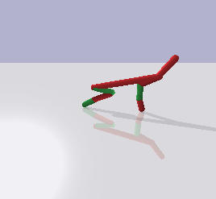
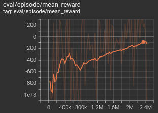
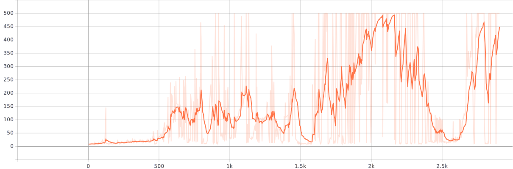

I’m not doing all that great emotionally, but I’m trying to keep learning RL, even if slowly. I made Cartpole and Lunar Landing environments work. Both of them have discrete actions. The next environment I went to try to learn was the Half Cheetah.

In this environment, you control a simple robot and are trying to teach it to run. You control it with continuous signals. I’m not sure what exactly they mean, probably something like force applied to joints. Continuous actions mean you need to use slightly different algorithms. I went to learn TD3 (twin delayed deep deterministic actor-critic), based on OpenAI’s treatment in Spinning Up in Deep RL. It was published in a 2018 paper called Addressing Function Approximation Error in Actor-Critic Methods.
Sidenote: depending on MuJoCo sucks
The vanilla half-cheetah environment is written with MuJoCo. MuJoCo is a commercial physics simulator used for a lot of robotics environments like this. You need a license to run it. As of now (October 18, 2021), there is a free license available for everyone to run MuJoCo until the end of this month. But in general, closed-source dependencies for open research suck.
There’s this open-source physics engine called Bullet. I’ve played with it a bit in middle-high school when I was trying to write some 3D stuff. Turns out they have since made Python bindings, and implemented a bunch of OpenAI Gym environments. So you can now run lots of environments without MuJoCo :)
To use the PyBullet environments, install the pybullet Python package and import pybullet_envs. The PyBullet repo has the list of implemented environments.
TD3 description
Q learning
To describe TD3 briefly, it’s similar to Q learning.
In Q learning, you’re learning a function \(\hat{\mathrm{Q}}_\theta(s,a)\), and a policy \(\pi\). You update \(\theta\) to make \(\hat{\mathrm{Q}}_\theta(s,a)\) match closer to the actual Q function for the policy \(\pi\), and you also update the policy \(\pi\) to gradually improve. You can do this exactly if you have a small enough environment to hold all this in memory. The procedure you use to make \(\hat{\mathrm{Q}}_\theta\) approximate \(\mathrm{Q}_\pi\) is basically SARSA: you minimize the squared error between \(\hat{\mathrm{Q}}_\theta(s,a)\) and an estimator that converges to center on the actual \(\mathrm{Q}_\pi(s,a)\). In the finite case, that Q learning estimator for a transition \(s \xrightarrow{a} (r, s’)\) is \(r + \gamma \max_{a’} \hat{\mathrm{Q}}_\theta(s’,a’)\). In vanilla Q learning, the followed policy is \(\mathrm{greedy}(\hat{\mathrm{Q}})\), which is what that maximum does.
But when you’re in a continuous action space, you can’t just \(\arg\max\) over all possible actions.
DDPG
Enter DDPG (Deep Deterministic Policy Gradient), in which you maintain 2 networks: the critic \(\hat{\mathrm{Q}}_\theta(s,a)\) which approximates the Q value of the current policy, and the actor - a deterministic policy \(\pi_\varphi: \mathcal{S} \rightarrow \mathcal{A}\), which you improve based on the critic’s estimations.
Run the agent with your current policy in a replay buffer, plus with some exploration (like a bit of Gaussian noise added to actions). Draw a batch from the replay buffer, and do an optimization step on the critic to minimize its Bellman error: $$\arg\min_\theta \sum_{(s,a,r,s') \in \mathrm{batch}}
\left[\hat{\mathrm{Q}}_\theta(s,a) - (r + \gamma \hat{\mathrm{Q}}_\theta(s', \pi_\varphi(s')))\right]^2 $$ Then update the actor to choose actions that get better Q values on the same batch: $$\arg\max_\varphi \sum_{(s,a) \in \mathrm{batch}} \hat{\mathrm{Q}}_\theta(s,\pi_\varphi(s))$$ The batch has to be drawn randomly. This is important, because if you draw a bunch of states that immediately follow each other, their predictions will end up pulling each other to explode towards infinity.
To prevent similar feedback cycles between the actor and critic, you keep 2 copies of each: the optimized one and the target one. They start out as exact copies. When computing the Bellman targets for the critic, instead of using the optimized actor and critic, use the target ones: $$\arg\min_\theta \sum_{(s,a,r,s') \in \mathrm{batch}}
\left[\hat{\mathrm{Q}}_{\theta_\text{opt}}(s,a) - (r + \gamma \hat{\mathrm{Q}}_{\theta_\text{targ}}(s', \pi_{\varphi_\text{targ}}(s')))\right]^2 $$ And slowly Polyak-average the target networks towards the optimized one (with (\approx 0.05)): $$
\begin{align*}
\theta_\text{targ} & \gets \varrho \cdot \theta_\text{opt} + (1-\varrho) \cdot \theta_\text{targ} \\
\varphi_\text{targ} & \gets \varrho \cdot \varphi_\text{opt} + (1-\varrho) \cdot \varphi_\text{targ}
\end{align*}
$$ By the way, I made up this a shorthand notation for this operation “update x towards y with update size (\alpha)”: $$\require{extpfeil}
\theta_\text{targ} \xmapsto{\varrho} \theta_\text{opt}, \varphi_\text{targ}
\xmapsto{\varrho} \varphi_\text{opt}
$$
TD3
Twin Delayed Deep Deterministic Policy Gradient was introduced in a paper called Addressing Function Approximation Error in Actor-Critic Methods. Note the “function approximation error” part. This talks about the error inherent in how \(\hat{\mathrm{Q}}_\theta\) approximates the real \(\mathrm{Q}_\pi\). In particular, if in a state \(s\), the critic overestimates the Q value for some action \(a\), the actor’s optimization step will be incentivized to exploit that overestimation. But that doesn’t mean it’ll actually get a better result.
TD3 adds 3 steps to address this:
Target policy smoothing: in the Bellman update, instead of expecting to follow \(\pi_{\varphi_\text{targ}}\) exactly, add a bit of Gaussian noise to the chosen action. That way the policy can’t try to hit a small peak of overestimation by the critic.
Twin critics: train 2 critics, both to minimize the Bellman error. Optimize the policy to maximize one of them. Instead of setting critics’ targets based on one critic, choose the target based on the lesser of their two predictions. If you train 2 networks, they’re unlikely to overestimate the real Q function in the same place. $$\arg\min_\theta \sum_{i \in {1, 2}} \sum_{(s,a,r,s') \in \mathrm{batch}}
\left[\hat{\mathrm{Q}}_{\theta_{i, \text{opt}}}(s,a) - (r + \gamma \min_{j\in {1, 2}}\hat{\mathrm{Q}}_{\theta_{j, \text{targ}}}(s', \pi_{\varphi_\text{targ}}(s')))\right]^2 $$
Delayed policy updates: update the policy just once per 2 batches (i.e., 2x slower than the critics).
Rai’s ML mistake #5: Multiplication? What multiplication?
The following happened over the course of ~6 weeks, as I gathered a few hours at a time of energy, will, etc. to work on this.
So, I go and implement my algorithm and run it. On my first try, I implement it wrong because I misremember how to implement it. I go back to Spinning Up in Deep RL, smack myself on the forehead, and go fix it. Run it again.
It’s learning something. The average reward is going up. But slowly.

Then, over the next ~4 weeks, whenever I have some time, I try to bang my head against the keyboard some more. Tweak all the hyperparameters. Look up the hyperparameters they use in rl-baselines3-zoo. No dice. Repeat for a while, for all hyperparameters - critic learning rate, actor learning rate, actor delay, replay buffer size, batch size, Polyak rate, discount rate, initial random action steps. Rewrite the code twice-thrice. Still the same issue. Keep it training for several days. Does not help. Repeat a few times.
Thanks God there’s a reference implementation
I wanted to implement this algorithm on my own, because I want to grok it. But I got to the end of my wits here, and started thinking: “hell, can this algorithm even solve this environment”? The paper had graphs and results with the half-cheetah. But that was the MuJoCo half-cheetah. Maybe the PyBullet half-cheetah had a different reward scale and this was actually as good as it went?
Unlikely. All my half-cheetah did in evaluation was stand upright without moving. Maybe sometimes kinda jump once.
But yeah. Let’s run the reference implementation and see what it does. I start it for a few minutes, and…
...
Total T: 109000 Episode Num: 109 Episode T: 1000 Reward: 938.893
Total T: 110000 Episode Num: 110 Episode T: 1000 Reward: 987.304
---------------------------------------
Evaluation over 10 episodes: 963.088
---------------------------------------
God dammit. I was getting maybe, on a lucky episode, like 300 at most, and that was after millions of training steps…
Does it just not work because of Tensorflow?!
Okay, so I have code A which does not work (my code), and code B which does (reference implementation). I know what to do here. Align code A and code B together so that they’re similar, and then scour the diff line by line. Somewhere in there there’s my bug.
I refactor my code, rename variables, etc., until the diff is small.
Now the only diff I see is basically me using Tensorflow and the reference implementation using PyTorch. Stuff like this:
2,3c3,7
< import tensorflow as tf
< from tensorflow.keras import layers as tfkl
---
> import torch
> import torch.nn as nn
> import torch.nn.functional as F
136,137c123,124
< state = tf.expand_dims(state, axis=0)
< return tf.squeeze(self.actor(state), axis=0).numpy()
---
> state = torch.FloatTensor(state.reshape(1, -1)).to(device)
> return self.actor(state).cpu().data.numpy().flatten()
And yet, my code doesn’t work, and their code does.
I bang my head against this for maybe 2 more days. So, where can the differences be?
Maybe different action scaling. I align action scaling like they do. Instead of “sigmoid, then rescale from 0 to 1 into action_space.low to action_space.high”, I do their “tanh, then multiply by action_space.high”. Those should be basically the same thing, but I do it anyway just to be safe. Still doesn’t work.
Maybe different initialization. Unlikely, but possible. Their code uses Torch’s Linear. It initializes weights and biases both randomly from \(\text{Uniform}([\pm \sqrt{\frac{1}{\text{input size}} }])\). I use TensorFlow/Keras’s Dense. It uses Xavier uniform initialization (aka Glorot initialization, named … after someone named Xavier Glorot) by default, which draws from \(\text{Uniform}([\pm \sqrt{\frac{6}{\text{input size} + \text{output size} } }])\). And TensorFlow initializes biases to zero. Okay. I rewrite the TensorFlow initialization to do the same thing as Torch. Still the same. God dammit.
Does the ADAM optimizer in TensorFlow and PyTorch work differently? … Maybe. I’m gonna shelve the idea of stepping through it for later.
Copy the whole goddamn setup
I decide that I’ll copy even more of their code. Okay, this is unlikely, but what if there’s something wrong with how I initialize the environment or something? I copy their main.py, switch it to TensorFlow, and use their utils.py.
And now it works, and I scream.
It’s the utils.py that did it. That file in their repo implements the replay buffer. I didn’t pore over my implementation in detail, because … hey, it’s the simplest part. How would I mess up a replay buffer?
Their replay buffer exists in RAM, and has NumPy arrays. It uses NumPy’s randomness. I use TensorFlow variables and TensorFlow’s tf.random.Generator.
After some work, I find the culprit lines.
Here’s how my code stores the replay buffer’s rewards and “is this the final state” flag:
TD3 maintains 2 critics. critic_target is a Keras model, which contains two stacks of feed-forward layers. At the end, they have a q_value = tf.keras.layers.Dense(1, ...), and then the whole model returns the tuple (q1_value, q2_value).
With that in mind, what’s the shape of target_Q1?
No, it’s not (batch size). It’s (batch size, 1). Because of course there’s the last dimension of size 1 - if your model has more than 1 output node, you need to stack them.
What’s the shape of not_done?
With my replay buffer, it was (batch size). One scalar per experience in batch, right? With the reference implementation’s replay buffer, it was (batch size, 1).
Consider the line target_Q = reward + not_done * self.discount * target_Q, where target_Q has shape (batch size, 1) and, as established for my code, not_done has shape (batch size). What’s the shape of the computed expression?
If you answered (batch size, batch size), I guess you win. And that was not intended. I wanted it to be (batch size) - one target Q value for one replay experience in batch.
… Great. current_Q1 / current_Q2 have shapes (batch size, 1), which is compatible with (batch size, batch size). So they get auto-broadcast… and reduce_mean gladly reduces the matrix of squared errors to a scalar mean. Awesome. Thank you. I’m so glad Autobroadcast Man and Default Options Girl arrived and saved the day.
Learnings
So what did I learn today?
It’s always, always, ALWAYS those goddamn tensor shapes.
And probably write unit tests, too. I probably won’t be bothered to do that anyway because writing unit tests for code that has complex optimizers and neural nets is annoying.
And maybe I should be using operators that don’t auto-broadcast, or something that doesn’t allow me to mistakenly vector-vector-to-matrix multiply when I mean to vector-vector-elementwise multiply.
I’m not done being annoyed and sour about this but I’m done ranting about it here. Ciao, see you next time I kill a few weeks on another mistake this stupid. This is the point of all those “Rai’s ML mistakes” posts. I write these algorithms so I can grok them, and I headsmash the keyboard this way because I hope now I’ll remember with a bit more clarity and immediacy: “It’s always the goddamn tensor shapes”.
My fixed code is on my GitLab, and here’s the obligatory scoot-scoot:
A half-cheetah doing the scoot-scoot after 216 episodes of training.
Continuing my list of ML mistakes from last time, here’s:
Rai’s ML mistake #4: Too much autograd
So here I am, writing an agent for LunarLander-v2. I’m using Q-learning. I approximate q*(s, a) as q̂w(s, a) with a neural network, taking a vector representing the state, and outputting one approximate action value per output. The neural network is trained to minimize squared TD error on the policy the agent’s running, which is ε-greedy with respect to q̂: $$
\begin{align*}
\require{extpfeil}
\ell(w) &= \mathop{\mathbb{E}}\limits_{(S \xrightarrow{A} R,S') \sim \mathrm{greedy}(\mathrm{\hat{q}}_w)}
\left[ \left(\mathrm{\hat{q}}_w(S, A) - (R + \gamma \max_{A'} \mathrm{\hat{q}}_w(S',A')) \right)^2 \right] \\
\text{output } &\arg\min_w \ell(w)
\end{align*}
$$
Not quite off-policy
One note about the “policity” of this method.
Tabular Q-learning without function approximation is off-policy - you learn about π* from experience (S→AR, S′) sampled from any (sane™) policy. You just keep updating q̂(S, A) towards R + γ ⋅ maxA′q̂(S′, A′), and to max is there because you want to learn about the optimal policy.
But note that in ℓ(w), the experience (S→AR, S′) is sampled from the policy greedy(q̂w). We need to expect over a policy, because we’re using function approximation, so presumably we cannot learn a w which would make q̂w exactly fit q*. So we have to pick out battles for how well do we approximate q* - we care about approximating it closely for states and actions actually visited by the estimation policy.
Instead of assuming that we can sample (S→AR, S′) from greedy(q̂w) (so that we can approximate the expected squared TD error over it), I guess you could use the general importance sampling recipe to get rid of that: $$\mathop{\mathbb{E}}_\limits{X\sim \pi}[\mathrm{f}(X)] =
\mathop{\mathbb{E}}_\limits{X\sim b}\left[\mathrm{f}(X) \cdot \frac{\pi(X)}{b(X)}\right]$$
Semi-gradient
So, we want to minimize ℓ.
Note that ℓ depends on w (via q̂w) in 3 places:
In q̂w(S, A), which we are trying to nudge to move to the right place,
in R + γmaxA′q̂w(S′, A′), which is a sample from a distribution centered on qgreedy(q̂w)(S, A),
and in the distribution we’re taking the expectation on.
In practice, we hold (2) and (3) constant, and in one optimization step, we wiggle w only to move q̂w(S, A) closer to targets. That means that in our gradient, we are ignoring the dependency of (2) and (3) on the w that we are optimizing, which makes this not a full gradient method, but instead a semi-gradient method.
Experience replay
My first shot at this agent just learned from 1 step (sampled from ε-greedy policy for q̂w) at a time. It worked in the sense that it ended up learning a policy close enough to “solving the environment”. (The environment says the “solved reward” is 200. I got maybe like 150-180 over 100 episodes, so not quite there, but it’s close enough for me to say “meh, I’ll wiggle a few hyperparameters and get there”.)
But to learn a fair policy, it took the agent about 10 000 episodes, and the per-episode total reward over time made a spiky ugly graph:

I don’t like that it takes all of 10 000 episodes, and I don’t like how spiky and ugly the chart is.
Experience replay means we store a bunch of experience (S→AR, S′)1, 2, … in a buffer, and instead of updating w by some gradient-based optimization method (I used ADAM) to minimize squared TD error one step at a time, we update it to minimize squared TD error over the whole buffer, a bunch of steps at a time.
Experience replay should make learning more sample-efficient (so it should need less than 10 000 episodes). Also, it should reduce one source of “spikiness and ugliness” in the chart, because the chart will be doing step updates on a larger batch. Making the batch larger should reduce the variance of the updates.
Broken code
So, here’s how I initially implemented one step of the update. self.experience_{prestates, actions, rewards, poststates, done} holds the experience buffer (S, A, R, S′ respectively for observed transition S→AR, S′, plus flag to signal end of episode).
The code calls the Q network twice: once to compute the targets (R + γ ⋅ maxA′q̂w(S′, A′)), once to compute q̂w(S, A). Then, we will compute a loss, and we will take its partial “semi-derivative” with respect to w, and apply the gradient to bring q̂w(S, A) closer to the target.
The problem was: I also put the target computation into GradientTape scope, so the optimization was given the freedom to change not just q̂w(S, A), but alsoq̂w(S′, A′). So the fix was just to move computing the targets out of the GradientTape scope.
I looked at this code basically non-stop for 2 hours, and I realized the error when I took a break and talked with a friend.
Pet peeve #47: math typesetting
The full list of previous 46 pet peeves will be provided on request, subject to a reasonable processing fee.
MathJax, \hat and \mathrm
q̂ is a function (of w, S, A), not a variable, so it shouldn’t be typeset in italic. I tried using \hat{\mathrm{q}}_w. I believe that works in LaTeX but turns out that MathJax is not willing to render it ($\hat{\mathrm{q}}$). But \mathrm{\hat{q}} is perfectly fine: q̂. But \mathrm{\hat{q}}_w is perfectly fine: q̂w.
MathJax and inline \xrightarrow
Also, my MathJax doesn’t seem to understand \xrightarrow in inline equations. That’s a shame, because S \xrightarrow{A} R, S' is more readable than S \rightarrow_A R, S' (S→AR, S′), which I used here instead (in inline equations). It looks like this: $$S \xrightarrow{A} R, S'$$ Let me know if you know what’s up with those MathJax things. I wonder if it’s MathJax being wrong, or me sucking at LaTeX.
Why I’m a math typesetting snob
Typesetting things that aren’t variables as if they were variables really bugs me, because it makes the formulas really ugly. And the font you use to typeset a math thing is a very useful hint for the reader about what sort of object it is. I learned a bit about it when volunteering as a KSP organizer - KSP is full of math snobs. Compare: $$
\begin{align*}
\mathrm{Loss}(w) = \sum_i (\mathrm{f}(x_i) - y_i)^2 \\
Loss(w) = \sum_i (f(x_i) - y_i)^2
\end{align*}$$ In the second one, it takes a bit of processing to understand that Loss is not a multiplication (L ⋅ o ⋅ s ⋅ s), and that f(xi) is function application.
If you want to read more, you can take a look at Typographical conventions in mathematical formulae on Wikipedia. Or maybe some LaTeX / TeX books or reference material might have a lot of explanations, like “use this in these situations”. And also good math books often have a large table at the front which explains used conventions, like “w is a vector, X is a matrix, f is a function, …”
https://xkcd.com/1015/ Now you know about ugly errors in math typesetting, and if you Google it, also about bad kerning. You’re welcome, pass it along.
Recently I’ve been working on skilling up on reinforcement learning, particularly practice. I’m currently on the last course of the Reinforcement Learning specialization from University of Alberta on Coursera. The last piece of the course is about solving the Lunar Lander environment. I’ve been trying to solve it on my own first before going through the labs, so that I can learn things deeper and experiment.
I’ve tried implementing an actor-critic agent. The actor is a feed-forward neural network specifying a parameterized policy πθ. The network’s input is a representation of the state, and it has one output per action. The policy is a softmax over these outputs. I tried a critic for predicting both v̂w, and q̂w.
I’ve not had good luck getting this to work so far. At one point I got the agent to fly above the surface (without landing), but then later I edited the code somewhat, aaaaand it was gone.
I stared a bunch into my update equations, but have not been able to find any obvious errors. I used TensorFlow’s HParams to try to tune all the hyperparameters, like actor learning rate, critic learning rate, and learning rate for the average reward. (I wrote it attempting to use the continuing average reward formulation.)
I decided to first try a simpler environment, CartPole.
In the end, I managed to solve it a couple hours back.
In the implementation, I’ve made a couple mistakes and observations, which I want to note down.
Colab notebook with my CartPole agent
Here’s my notebook if you want to play around:
Rai’s ML mistake #1: Short episodic environments can use high γ
I initially wrote my code to use a discount rate of 0.9. On n1try’s solution that I found on the leaderboard (unfortunately not sure which one it was), the discount rate was actually set to 1.
I suspect I might have set the discount rate too low. The CartPole environment has episodes which have length of only up to ~500, with 1 unit of reward per step.
If you have a discount rate γ and an average per-step reward of r, then in an infinite environment, the value of a state will be something like: $$ \frac{r}{1-\gamma} = r + r \cdot \gamma + r \cdot \gamma^2 $$ Knowing this, I was a worried that if I set γ too high, the targets for the Q network to learn would have a high variance. But I forgot that the environment had only like ~500 steps, so setting γ = 1 would be alright in this case.
Lesson learned: I need to keep in mind the environment’s characteristics, in particular how long are the episodes and how high total rewards can I expect.
Rai’s ML mistake #2: Too little exploration
The algorithm that ended up working for me was Q-learning (with function approximation by a small neural network). I selected actions ε-greedily, with ε set to 0.02, so ~2% chance of random moves.
Looking at some solutions of the environment that I found, they had much higher exploration rates. Some that I saw had 100% random actions initially, and had it then decay. And the particular solution I was looking at set the minimal exploration rate, after all the decay, to 10% - 5x more than I had.
I think my code found a policy that “solves” the environment faster when I put in 10% exploration.
Rai’s ML mistake #3: Evaluation interfering with training
I ran my algorithm on 10k episodes, and every 1k episodes, I ran the code in “greedy mode” (i.e., no random actions) and recorded average performance on 100 episodes. I did that because my Q-learning implementation was executing an ε-soft policy, which might be worse than the greedy policy that it’s learning. I don’t know how “fragile” the CartPole environment is (i.e., how much worse the total reward per episode gets if I force an agent to take some amount of random actions), but I wanted to rule it out as a source of errors.
I implemented the evaluation by just adding a flag train: bool = True to the agent’s functions. If train was False, I’d skip all the update steps and select actions greedily.
Unfortunately, I ended up making a mistake and I forgot to add the condition around one branch of code - updating the Q network after a final step (i.e., when the agent receives a last reward and the episode ends).
As a result, the agent ended up executing ~100 incorrect updates (based on an incorrect last action and state, towards the final reward), one incorrect update per evaluation episode.
Lesson learned: Double check my code? Maybe even test my code? Not sure how to learn from this :/
So, until episode maybe 400 or so, nothing much is happening. Then until about step 1800, it’s sorta doing something but could be better. Then at around step 1800, it finds a good policy, and returns are nice. Basically, problem solved.
Then I train it for a bit longer, and at episode ~2.2k… for some reason performance goes WAY down for about 300 or so episodes. It’s as bad as if the network forgot everything it learned before.
Then, after a while (at about 2700), it quickly climbs back up to good performance. On the full graph with 10k episodes, this cycle would repeat maybe every 2000-3000 episodes. Wat.
I have no idea what’s going on here. Maybe one sort-of ideas, but I have not tested it, and I have a relatively low degree of confidence in it.
Maybe for some reason the critic might overfit in some way that makes it behave badly on some early action. Maybe it’s trying to learn some relatively “late game” stuff, and the update that happens ends up screwing some early behavior, so the agent then has to spend a bunch of episodes learning the right early behavior again. The policy changes in a non-continuous way, so if some early decision switches to do the wrong thing, the agent will then have to follow a bunch of wrong trajectories until the one-step Q updates end up bubbling up to the initial wrong decision. I guess this might be somewhat mitigated by using eligibility traces so that updates bubble up faster, or by using actor-critic with soft policies.
Another potential reason for having a really bad episode might be if the agent happens to pick a random action (with probability ε) at an early point where the pole is unstable and very easy to mess up. And then it can’t recover from that error. But that explanation isn’t supported by how wide these areas of low episode returns are. It might explain maybe one sporadic bad episode, but not a whole bunch of them after each other.
Next steps
Now that I got a CartPole agent running, I’ll come back to the Lunar Lander environment. I’ll first try solving it again with a Q network. I could probably similarly get away with not discounting rewards at all (γ = 1).
Also I’d like to implement experience replay to make this more sample-efficient.
If that ends up working, I still want to get actor-critic working.
The last about 2 weeks I have taken some time to finally get practical AI experience, so I’m running TensorFlow and all, and making lots of Anki cards.
Sidenote: Anki for programming is awesome!
By the way, Anki cards are so useful for learning how to use libraries fluently without looking things up it’s ridiculous.
For example, thanks to a bunch of Clozes, if you give me a CSV dataset, I can define, train and evaluate a network using the Keras functional API, without looking up anything. It means I get quickly to the interesting stuff, and don’t waste 80% of my time looking up things I already looked up before. If I see that I’m looking something up for, say, the 3rd time, I just make the cards that would have helped me, and that might be the last time I look that up.
Can a computer now write similarly well to me?
I saw very interesting examples of how well modern language model can generate text, and I’m wondering how close can I be emulated at this point. Depending on how good a language model is, it could replace the copywriting industry and make a 1000% profit margin on top. And I sort of wonder how close it is to me. Though I’m not sure what would I do if I learned my writing can be replaced. I guess I would continue enjoying it, because it feels like I’m “expressing my soul”, and also it’s useful to sharpen my thoughts. If my understanding of something is foggy, when I write things down, I can much more easily spot where exactly I’m confused, or what’s a question I can’t answer, or to realize “hey actually I made a logical error, I no longer believe the conclusion I wanted to justify”.
But I guess I could then just as well automate this whole website thing. I put too little stuff on it anyway - if I just got myself to do the work and put my ideas into polished-ish writing, I would write so much more.
I guess I’d still write also because there’s some pleasure in someone telling me “oh by the way I read your article the other day, thanks for that tip”. And I’d not get that from text I had a Transformer write. Even if it did manage to write a thing as good as me or better, so that people would compliment me for “hey nice thing on your website”, it would still make me go a bit “nice!”, but it would ring a little hollow, I guess. Praise for work that isn’t mine. But then, did the Transformer really “work” for it? Also the work coming up with the architecture and implementing it and making Write With Transformer belongs to many many other people.
Experiment
So I’m going to try it in this article. I will start slowly replacing words by top suggestions (Write With Transformer distil-gpt2). I’ll start with maybe 90% me, 10% Transformer, and by the time I finish writing this, it’ll be 100% Transformer. And I won’t, at least for now, tell you which parts are me and which are the generator. That way I won’t have just a test of “I can / cannot be replaced by a Transformer”, but by asking people which sentences were from me and which were from the Transformer, I’ll get more gradual information about the point at which today’s Transformers can replace me. From what I read, models like GPT-3 are able to convincingly copy “surface style”, and they are able to make simple inferences, but they might make mistakes.
By the way, the footer of Write With Transformer says: “It is to writing what calculators are to calculus.” And that’s a nice sentence in that, on a shallow reading, it sounds like a positive comparison. “It is to writing what [things for doing mathematics] are to [field of mathematics].” But I never had a calculator that was any good for calculus. I never saw a calculator with a “derive by x” or “indefinite integral dx”. Though now I also wonder why no calculator has it. It would be so useful, and not that hard to implement. Mathematica can integrate most of what you throw at it! And algorithms for integrating broad classes of functions are also totally a thing in literature!
“It is to writing what Mathematica is to calculus”? Sure. That sounds useful. A tool that can solve 90% of practical problems. Neat. “It is to writing what calculators are to calculus”? AAA, you know what? I’ve been in many situations where you can have all the calculators you want, and they won’t save you from an ugly enough integral.
It sounds like one of those “proverb insults”, like “you must be at the top of the Gauss curve”.
Also the test of making the Transformer generate parts of the article can show if it could be useful as a computer-assisted authoring tool.
I wonder what a problem is there with making the jobs of some people much easier with AI like this. For example, I have a virtual assistant, and I think it should be possible to augment them with a Transformer. You train the Transformer on chats of the highest rated virtual assistants with customers, and annotate the conversations with times when the virtual assistant had to do something. Then you integrate that Transformer into, say, Google Chat, and add some quick shortcuts, like “Tab” for “autocomplete”. I fully expect we should be able to mostly automate conversation like “hello, I hope you’re having a nice day”.
Motivation to do my own thing
By the way, the other day I stumbled on Better Explained, and the author has a great article: Surviving (and thriving) on your own: Know Thyself.
And this is the best of sources of motivation to do my own thing that I’ve seen in a while. This article made me realize that yes, there are actually things I want to do. I can just look at my TODO list in my Roam Research database. If I only had the most productive ~8 hours of my time available for all the things I want to learn and make.
So I’ve been considering going part-time at Google. For some time I’ve found that I just can’t muster the energy to be consistently productive after work. And switching contexts is expensive, and gets much more expensive when you switch to a context you haven’t seen for a couple days. Like what might happen if one day I do 4 hours of Colab experimentation, then the next week I don’t have spare energy after work, and then a week later I open the notebook again, read and go 🤨. It helps to keep notes, and not half-ass the code style too badly, but there’s a trade-off between “help future-me quickly get back to productivity on this task” and “spend energy making progress”.
Also, with stocks having recovered from COVID and with Bitcoin currently going through Another One Of Those, I’ve been closely watching how much longer until financial independence.
I am not at the point of “I’ll be able to live on this on my current standard forever”. But at a lower standard? Like moving back to Czech Republic? For some values of “lower standard”, yes. And at some some point, the marginal expected gains from a higher monthly budget will become dominated by the gains of having more free time. And that makes it less and less rational to trade financial security for freedom.
And it’s not like I can’t make money doing things I want to do, either. There’s such a huge spectrum. I can career-steer at Google more boldly, or go part-time to do my own thing. Or even if it’s a little less expensive It might not be just the same freedom as reducing my hours, or working with a company that’s more closely aligned with my interests, or even quitting and doing my thing.
Still experimenting
By the way, I’m still doing the GPT-3 of this article thing, with slowly increasing density. And as I increase the density, I expect it will be more “efficient” to just output tons of filler text. Filler is used in more articles than crisp sentences that have only narrow meaning. If GPT-3 outputs “What gives?” after any of my sentences, it will probably get a higher reward than if it outputs “an endomorphism that is an isomorphism is an automorphism”, just because it’s all too hard to get some extra filler into a place where it would not plausibly fit. What gives?
So expect this piece of writing to slowly degrade from saying something to saying nothing in so many words. And I’m doing it in my mind expecting some successive Tab press to generate either nonsense, or bullshit. I m going to continue to keep it in line with making sense, as far as I’m able to express myself through filler text.
As a result, I think this will sometimes end up stating things I don’t actually endorse or believe. If that happens, I think I’ll also release the “spoiler” (annotating the sections of this text that are generated) immediately, so that I don’t accidentally say something like “I for one welcome our AI overlords”. Well, I am sure I will As long as we as a species don’t fail the exam.
As far as I’m concerned, I will continue to put together articles on whatever interests me, to write code for problems I want solved, and to try to improve my habits. If the worldview and “values-view” and “lifestyle” that I want to implement sticks, then the same can be said for every positive change it’s brought the past couple weeks. So, what’s really causing this to slip away slowly? Why have previous times when I held similar viewpoints slipped back into routine? Maybe it’s just because it’s been the default for so long for me to work through the things I like Slowly, slowly because of all the panic from ideas like “maybe I might have to leave work or start burning money instead of making it”.
And that will change with time Or so would I hope. Advertisements Popular media. I will be keeping track of all those attention-eaters. I don’t want to have a week where all my energy goes into a black hole.
I just want to keep going.I don’t want to get bored. Curiosity and learning things and solving problems for people is life. I just want to have something that will change andchange and improve my life. In the direction of more aliveness and generating meaning. And to keep doing that I can only have one way or another
The bottom line is I don’t want to do things I want to do in the way that I want to do. Not with the current default setting where “want” tends to fall back. I want to do everything that I can to get my attention. But not with the current default setting where “want” tends to fall back. I don’t want to get bored. It’s just a matter of how much I like it. In the moment.
And for those of you out there who are interested in reading, please, like me, subscribe to my Facebook page and share your thoughts about the situation with me . (By email or to your friends , subscribe to my blog here.) I will be taking the time and effort I have put into writing to make it easier to make things better for you.
And for those of you who aren’t interested in reading, please , like me, subscribe to my Facebook page and share your thoughts about the situation with me. (By email or to your friends, subscribe to my blog here.) I will be taking the time and effort I have put into writing to make it easier to make things better for you.
So I’m going to be publishing the article in the second week and I’ll be posting the article in the second week and I ’ll be posting the article in the second week and I’ll be posting the article in the second week and I am posting the article in the second week and I will be posting the rest of the post and I will be posting to RSS and Atom and Hacker News maybe and maybe on the same page. If you like the content you see in this website, thanks, I really appreciate you! You know the best way to make your next book available is to check out my Blog
I might be repeating the experiment with different language models, to see which ones can keep going to a higher density without devolving into meaninglessness. But if you do it this way, and have more questions, I’ll post it again, and I ’ll be posting it guess in which week. From what I gather from this experiment, looks like I might not be 100% obsolete just yet. Walk on warm sands.
TL;DR: Principle of no non-Apologies: “Distinguish between saying I’m sorry and apologizing. Don’t give non-Apologies.” Do not Apologize when you don’t agree that you fucked up. When you fucked up, own the fuck-up and, if it’s systematic, commit to reducing future fuck-ups.
Everyday “I’m sorry” is usually not an Apology
“I’m sorry” can be used in several ways.
One way is using it as a conciliatory gesture, basically saying “you’re stronger than me, I submit, please don’t hurt me”. It’s one possible way I might react when under threat by someone stronger making demands I don’t agree with.
Another way is to say “this was accidental, I didn’t intend to hurt you”, like when you bump into someone when boarding your tram.
But when you use the words that way, you are not making an Apology. And it’s useful to distinguish between these uses of “I’m sorry” andactual Apologies.
Apologies and non-Apologies
Courtesy of an unknown source that I can’t immediately recall, you are Apologizing when you:
Communicate understanding that you behaved badly (and own responsibility for it),
try to fix the negative consequences of that behavior, and
commit to work on not acting similarly in the future.
An Apology which holds to this definition makes you vulnerable (because you are open about the weakness that caused the behavior), and it’s not to be made lightly, because of the commitment. It is also virtuous to own your mistakes or systematic problems, and to work on them.
On the other hand, if you use the ritual apologetic words but do not meet these criteria, let’s call that a non-Apology.
A prototypical example is “I’m sorry you feel that way”, which happens when a sociopath in charge is forced by overwhelming force to “Apologize”.
“I’m sorry” that you tell your boss just to make them stop grilling you is also, under my use of the word, a non-Apology.
So is, in many (but not all) cases, a “sorry I’m late” I might say when coming to a meeting. Also the “bump into someone on the tram” example, and the “I yield I’ll do what you demand” example.
(So, notice that I’m not saying non-Apologizes are morally bad. Some of them are, but many are also just those tiny social rituals you need to do so you make it clear to people you aren’t a dick.)
Principle of no non-Apologies
My principle of no non-Apologies is two-part:
Distinguish between saying “I’m sorry” and Apologizing.
This first part I recommend adopting universally. Know the difference between the social ritual that evolved from small routinized Apologies and actual Apologies, and know which one you are doing at which time.
Don’t give non-Apologies.
This second part I apply to relationships into which I want to bring my whole self, mostly my personal relationships, but also some work relationships.
Unfortunately, many of us are stuck in power differential relationships with people who demand apologetic-sounding words, and there might be no better solution than to yield. But still, it’s good to know that you are saying “I’m sorry”, and not Apologizing. That way, you can appease without cognitive dissonance.
But in relationships with mutual care and respect and compassion, it should make sense that you shouldn’t be obliged to Apologize if you don’t agree that you did anything wrong. When you feel pressed to apologize, your first instinct should be to ask what you did wrong, and if there are different viewpoints, have a conversation.
If your behavior is worthy of an apology, don’t stop at “I’m sorry”. Understand why the behavior happened, and work to prevent it from causing more bad consequences in the future.
P.S.: Generalizations
This is just one instance of a more general move of looking at some social ritual (like apologizing) and looking at it a little “sideways”: getting back in touch with the original meanings of the expressions used in it. Rituals and words can lose meaning over time, and you can lose concepts when that happens. If you want to see what it’s like to look at things that way, I’ve had a pretty vivid experience of it after finishing Wittgenstein’s Tractatus.
TLDR: Fixed mindset and fear of inadequacy hinder learning. Competence gives you confidence - where you’re competent and confident, you don’t have fear of inadequacy. And if you don’t learn fast because you’re afraid of feedback (because you’re afraid of inadequacy), you’ll not get better, leaving you relatively incompetent and afraid of inadequacy. 🗘
A thing about sex recently clicked from several sources:
Being high and talking with a certain sergal,
plus reading a Facebook thing by Duncan:
plus listening to John Vervaecke’s series Awakening from the Meaning Crisis. (One of the episodes talks about fixed/growth mindset, but I can’t find it right now. You should go watch the whole series anyway, it’s awesome.)
During sex, I have a background fear of “what if I can’t bring them to orgasm”. I want my partner to enjoy it as well, and I want to reciprocate, and I would feel bad if they bring me to orgasm but I can’t bring them to orgasm. So, I hurry and try hard to bring them to orgasm, because I am not confident of my sexual skill. Orgasm is cool, but the sex before orgasm is also cool. Sex that doesn’t feel hurried and where you can take your time and stretch out pleasure. But, so far, in like 90% of the sex I’ve had so far I had the thought “aaaa sex aaaa gotta perform and be good enough and hurry and give them an orgasm aaaa”, somewhere in the background. In that kind of environment, you don’t get a lot of learning done.
Say you’re learning how to play the violin. We know lots about learning. CFAR’s handbook (which I think is still not publicly readable) has a lot of useful stuff on it. Things that make learning work well include:
You need to learn the basics first. You don’t start by playing Vivaldi’s Four Seasons. You start by playing one note until you get that one note at least 90% right: holding the violin correctly, not having the bow screech, not touching the strings that shouldn’t ring, holding the tone for as long as required without it fluctuating (unless you want it to).
You need feedback, and the faster the feedback loop is, the better. If you play the Four Seasons and by Summer you start holding the bow wrong, your violin tutor will immediately stop you and tell you. The tutor won’t wait the remaining 20 minutes to tell you that starting with Summer they stopped enjoying your performance and just hoped you’d get it over with soon.
So. When having sex, I hurry because I worry I might be unable bring my partner to orgasm, making the experience less than optimal. And I never really get learning done because I always hurry because I worry I can’t bring my partner to orgasm, which I worry about because I never learned enough to be confident in my ability to do that. 🗘
With the next couple of partners I have, I think I’ll ask if we could get some learning done. As in, play the Four Seasons, and tell each other if we’re off tune or in the wrong rhytm or need to tune the strings. And ask proactively, too. If you’re scared that holding the violin wrong makes you a not-good-enough violin player forever, you’ll be holding it wrong until you chance upon the right way by stochastic gradient descent, with the loss function being “the partner’s body language looks happy”. That also converges (if you’re good at reading people), but slower.
Go learn about growth/fixed mindset if you haven’t yet. I’ve known about the concept for a while, but somehow I never thought of applying it to this area until now. And I suspect a lot of the places where I’m not competent right now are also places where I have fixed mindset but haven’t yet realized it or addressed it. Peace.
In the long run, optimizers win. So act like an optimizer.
Optimizers use all available resources to take optimal decisions. Optimizers are motivated to have beliefs that correspond to reality, because they are needed as inputs for the function that determines the action.
If you feel something is true, it’s not the same thing as believing it’s true. Don’t do something just because you feel it’s the right thing. Do it if you believe it to be the correct thing to do. Not if you feel it. If you believe it. Don’t make the decision based on what your S1 alone is telling you. (Sure, S1 is also good for some stuff but you would not use it to correctly solve x^2 - 64 = 0.)
You are always in control of your actions. When you, the optimizer, don’t move the body (e.g., binging etc.), you have taken an action that caused the connection from your beliefs to your actions to be cut. That does not mean you don’t always have control of your actions. You are a subprogram running on a smartass monkey. Sometimes the CPU executes you, sometimes it doesn’t. Some conditions cause you to get executed more, and move the monkey. Some conditions cause another program to execute. These conditions can be affected by the monkey’s actions. And when you are able to exert influence over the monkey’s body, you can attempt to choose such monkey actions that optimize the probability you will be able to reach your goals. And if your goals require you (and not some other process) taking actions over the monkey, you attempt to get yourself scheduled. (Of course some processes might be best left to some other program, although that’s said with a lot of uncertainty and remains to be proven.) (At least, execution of some other subagent might be good for monkey happiness, which might be needed as prevention of interruptions from high-priority “hunger, sadness, …” monkey processes.)
S1 can be used as an interface for talking with other monkey processes. Yep, feels good. I have at least some monkey subagents agreeing on this being a good idea.
Okay, just lost control for a while. Let’s make this a post and cross [interrupt] It’s some social process interrupting. Interrupting… Interruptions can be stopped. I should do that at some point, like disabling notifications.
… cross my fingers it will cause more schedulings. I will need to think about what to do next, but let’s first try to increase our scheduling probability…
I’ve used Anki for ~3 years, have 37k cards and did 0.5M reviews. I have learned some useful heuristics for using it effectively. I’ll borrow software engineering terminology and call heuristics for “what’s good” patterns and heuristics for “what’s bad” antipatterns. Cards with antipatterns are unnecessarily difficult to learn. I will first go over antipatterns I have noticed, and then share patterns I use, mostly to counteract the antipatterns. I will then throw in a grab-bag of things I’ve found useful to learn with Anki, and some miscellaneous tips.
Alex Vermeer’s book Anki Essentials helped me learn how to use Anki effectively, and I can wholeheartedly recommend it. I learned at least about the concept of interference from it, but I am likely reinventing other wheels from it.
Antipatterns
Interference
Interference occurs when trying to learn two cards together is harder than learning just one of them - one card interferes with learning another one. For example, when learning languages, I often confuse words which rhyme together or have a similar meaning (e.g., “vergeblich” and “erheblich” in German).
Interference is bad, because you will keep getting those cards wrong, and Anki will keep showing them to you, which is frustrating.
Ambiguity
Ambiguity occurs when the front side of a card allows multiple answers, but the back side does not list all options. For example, if the front side of a English → German card says “great”, there are at least two acceptable answers: “großartig” and “gewaltig”.
Ambiguity is bad, because when you review an ambiguous card and give the answer the card does not expect, you need to spend mental effort figuring out: “Do I accept my answer or do I go with Again?”
You will spend this effort every time you review the card. When you (eventually, given enough time) go with Again, Anki will treat the card as lapsed for reasons that don’t track whether you are learning the facts you want to learn.
If you try to “power through” and learn ambiguous cards, you will be learning factoids that are not inherent to the material you are learning, but just accidental due to how your notes and cards represent the material. If you learn to disambiguate two ambiguous cards, it will often be due to some property such as how the text is laid out. You might end up learning “great (adj.) → großartig” and “great, typeset in boldface → gewaltig”, instead of the useful lesson of what actually disambiguates the words (“großartig” is “metaphorically great” as in “what a great sandwich”, whereas “gewaltig” means “physically great” as in “the Burj Khalifa is a great structure”).
Vagueness
I carve out “vagueness” as a special case of ambiguity. Vague cards are cards where question the front side is asking is not clear. When I started using Anki, I often created cards with a trigger such as “Plato” and just slammed everything I wanted to learn about Plato on the back side: “Pupil of Socrates, Forms, wrote The Republic criticising Athenian democracy, teacher of Aristotle”.
The issue with this sort of card is that if I recall just “Plato was a pupil of Socrates and teacher of Aristotle”, I would still give the review an Again mark, because I have not recalled the remaining factoids.
Again, if you try to power through, you will have to learn “Plato → I have to recite 5 factoids”. But the fact that your card has 5 factoids on it is not knowledge of Greek philosophers.
Patterns
Noticing
The first step to removing problems is knowing that they exist and where they exist. Learn to notice when you got an answer wrong for the wrong reasons.
“I tried to remember for a minute and nothing came up” is a good reason. Bad reasons include the aforementioned interference, ambiguity and vagueness.
Bug tracking
When you notice a problem in your Anki deck, you are often not in the best position to immediately fix it - for example, you might be on your phone, or it might take more energy to fix it than you have at the moment. So, create a way to track maintenance tasks to delegate them to future you, who has more energy and can edit the deck comfortably. Make it very easy to add a maintenance task.
The way I do this is:
I have a big document titled “Anki” with a structure mirroring my Anki deck hierarchy, with a list of problems for each deck. Unfortunately, adding things to a Google Doc on Android takes annoyingly many taps.
So I also use Google Keep, which is more ergonomic, to store short notes marking a problem I notice. For example: “great can be großartig/gewaltig”. I move these to the doc later.
I also use Anki’s note marking feature to note minor issues such as bad formatting of a card. I use Anki’s card browser later (with a “tag:marked” search) to fix those.
I use the same system also for tracking what information I’d like to put into Anki at some point. (This mirrors the idea from the Getting Things Done theory that your TODO list belong outside your mind.)
Disambiguators
2020-06-01 update: In an earlier version, I used to call those “distinguishers”. I now call them “disambiguators”, because I think it’s a more appropriate name.
Disambiguators are one way I fight interference. They are cards that teach disambiguating interfering facts.
For example: “erheblich” means “considerable” and “vergeblich” means “in vain”. Say I notice that when given the prompt “considerable”, I sometimes recall “vergeblich” instead of the right answer.
When I get the card wrong, I notice the interference, and write down “erheblich/vergeblich” into my Keep. Later, when I organize my deck on my computer, I add a “disambiguator”, typically using Cloze deletion. For example, like this:
{{c1::e}}r{{c1::h}}eblich: {{c2::considerable}}
{{c1::ve}}r{{c1::g}}eblich: {{c2::in vain}}
This creates two cards: one that asks me to assign the right English meaning to the German words, and another one that shows me two English words and the common parts of the German words (“_r_eblich”) and asks me to correctly fill in the blanks.
This sometimes fixes interference. When I learn the disambiguator note and later need to translate the word “considerable” into German, I might still think of the wrong word (“vergeblich”) first. But now the word “vergeblich” is also a trigger for the disambiguator, so I will likely remember: “Oh, but wait, vergeblich can be confused with erheblich, and vergeblich means ‘in vain’, not ‘considerably’”. And I will more likely answer the formerly interfering card correctly.
Constraints
Constraints are useful against interference, ambiguity and vagueness.
Starting from a question such as “What’s the German word for ‘great’”, we can add a constraint such as “… that contains the letter O”, or “… that does not contain the letter E”. The constraint makes the question have only one acceptable answer - artificially.
Because constraints are artificial, I only use them when I can’t make a disambiguator. For example, when two German words are true synonyms, they cannot be disambiguated based on nuances of their meaning.
In Anki, you can annotate a Cloze with a hint text. I often put the constraint into it. I use a hint of “a” to mean “word that contains the letter A”, and other similar shorthands.
Other tips
Redundancy
Try to create cards using a fact in multiple ways or contexts. For example, when learning a new word, include a couple of example sentences with the word. When learning how to conjugate a verb, include both the conjugation table, and sentences with examples of each conjugated form.
Æsthethethics!
It’s easier to do something if you like it. I like having all my cards follow the same style, nicely typesetting my equations with align*, \underbrace etc.
Clozes!
Most of my early notes were just front-back and back-front cards. Clozes are often a much better choice, because they make entering the context and expected response more natural, in situations such as:
Fill in the missing step in this algorithm
Complete the missing term in this equation
Correctly conjugate this verb in this sentence
In a line of code such as matplotlib.pyplot.bar(x, y, color='r'), you can cloze out the name of the function, its parameters, and the effect it has.
Datasets I found useful
Shortcut keys for every program I use frequently.
G Suite (Docs, Sheets, Keep, etc.)
Google Colab
Vim, Vimdiff
Command-line programs (Git, Bash, etc.)
Programming languages and libraries
Google’s technologies that have an open-source counterpart
What’s the name of a useful function
What are its parameters
Unicode symbols (how to write 🐉, ←, …)
People: first and last name ↔ photo (I am not good with names)
English terms (spelling of “curriculum”, what is “cupidity”)
NATO phonetic alphabet, for spelling things over the phone
FIRE stands for financial independence/early retirement. The point is to save and invest money, and pay yourself a salary from the interest, eventually becoming independent on other sources of inocme.
There is a relationship between:
How much you have invested
The interest your investment makes. (The widely cited “Trinity study” suggests 4% as a “safe withdrawal rate”.)
The salary you pay yourself
How long your savings last for you
I have a program named worthy (on Github) that tracks my net worth and models when will I be financially independent under various assumptions. Here I describe the slightly fancy math behind a more accurate model for this relationship I finished implementing today.
I am probably rediscovering Financial Mathematics 101 ¯\_(ツ)_/¯
The questions
The “how much” question: I want to pay myself 1000 USD. My stocks grow 4% per year. How much money do I need?
The “how long until” question: I have 100 000 USD and save 3000 USD per month. How long until I have 200 000 USD?
First shot
Previously the tool’s model was very basic, and answered the two questions as follows:
I want to pay myself 1000 USD per month. My stocks grow 4% per year. How much money do I need? Well, the 4% you get per year should cover the yearly costs, so 1000/(1.041/12 − 1) ≈ 306 000 USD.
I have 100 000 USD and save 3000 USD per month. How long until I have the 306 000 USD that you said I need? That I modelled linearly, with just $ (306000 - 100000) / (3000/) 69 $.
Problems
Assuming infinite retirement time
If you pay yourself a monthly salary of $ \$1000 $ and your monthly interest is $ \$1000 $, your money will last forever, beyond your (likely) lifespan. If you are fine with retiring with $ \$0 $, you can pay yourself a bit more than just the $ \1000 interest.
Ignoring growth while saving
“Take how much money I need - how much I have, divide by monthly savings” ignores that the money I saved up so far also earn interest, before I’m done saving. It’s too pessimistic.
Stand aside, I know differential equations!
Let’s model the depletion of your money as a function f, which will map number of years since retirement to the amount of money. You start with some initial amount f(0). If we pretend you withdraw the salary for a year and add interest once yearly, we’d get:
f(x + 1) = f(x) + i ⋅ f(x) − c
Where i is the yearly interest rate and c are the yearly costs. In the example above, i = 0.04 and c = 12000 USD.
Then:
f(x + 1) − f(x) = i ⋅ f(x) − c
If we instead pretend that everything is continuous and squint, this looks like a differential equation:
f′(x) = i′ ⋅ f(x) − c′
(Where i′ plays sorta the same role as i - except it’s not equal to i. For now let’s pretend it’s some unknown variable. Its relationship to i will eventually pop out.)
So, magic happened and I pulled the general form of f(x) out of a hat. We know what are the i and c values when we assumed interest and costs happen only once yearly.
What about i′? Let’s guess it. If we had no yearly costs (so c = c′ = 0), we wanted to have f growing at a constant rate, gaining i in interest per year:
f(x + 1)/f(x) = 1 + i
Substituting in the above equation of f, we get: exp (i′(x + 1 − C))/exp (i′(x − C)) = 1 + i
When we simplify the fraction, we get exp (i′) = 1 + i and therefore i′ = log (1 + i). So, we have now successfully guessed the right value for i′ :)
Now what’s the right value of c′?
If we set interest to i = 0, f(x) should simplify to a nice linear equation losing c per 1 unit of x.
$$x=\int^{f(x)} -\frac{1}{c'} d\lambda + C = -f(x)/c' + C$$
So: $$-f(x)/c' = x-C\\
-f(x)=c'(x-C)\\
f(x)=-c'(x-C)
$$
So the right value for c′ is exactly c.
So we have: $$
f(x) = \frac{\exp(\log(1+i)(x-C)) + c}{\log(1+i)} = \frac{(1+i)^{x-C} + c}{\log(1+i)}
$$
C mediates a multiplicative factor before (1 + i)x. C is just some constant that makes the function work with the f(0) boundary condition. Instead of wiggling the C, we can instead wiggle C2 = (1 + i)−C, which is the actual multiplicative factor, and relabel C2 as C. (It’s an abuse of notation, but an OK one. *handwave*)
$$
f(x) = C \cdot (1+i)^{x} + \frac{c}{\log(1+i)}
$$ The one remaining unknown variable is C, which we will get from f(0) - which are the initial savings.
i_prime=0.03922071315328133
C=-205960.78029234003
after 0 years, got: 100000.0
after 1 years, got: 91761.56878830638
after 2 years, got: 83193.60032814502
after 3 years, got: 74282.91312957724
after 4 years, got: 65015.79844306671
after 5 years, got: 55377.9991690958
after 6 years, got: 45354.68792416598
after 7 years, got: 34930.44422943902
after 8 years, got: 24089.23078692297
after 9 years, got: 12814.368806706276
after 10 years, got: 1088.512347280921
Cool, it seems to be giving reasonable results. But our two questions were: how much money do I need to pay myself a given salary and how long until I save up the money I need.
Let’s instead first solve another question: if I have 100 000 USD and spend 1000 USD per month, how long will it last me.
For that, we just need to invert the familiar function:
$$
f(x) = C \cdot (1+i)^{x} + \frac{c}{\log(1+i)}
$$
We want to know the number of years x at which we will run out of money (so f(x) = 0) $$
0 = C \cdot (1+i)^x + \frac{c}{\log(1+i)} \\
(1+i)^x = \frac{-c}{C \log(i+1)} \\
x = \frac{\log{\frac{-c}{C \cdot i'}}}{i'}
$$
And let’s test it:
x = (log(-c / (C * i_prime))) / i_prime
print(x)
10.090871103712766
Cool, this matches what the Python f(x) predicted above - after 10 years, it was just dwindling at about 1088 USD.
Answering the how long question
To answer the question “if I now have 100 000 USD collecting 4% interest per year and put in 1000 USD per month, how long until I have 306 000 USD”, we can use the same procedure - just plug in a target f(x) = 306 000 instead of zero and set a negative c to represent savings instead of costs. Details left as homework for the curious reader.
If you’re curious about the Go code, see this commit.
Answering the how much question
As a reminder, the “how much” question asks: if I want to pay myself a salary of 1000 USD per month, how much money do I need. Previously, I solved that with saying “the interest should cover all the costs”, which resulted in an investment that would last forever (a perpetuity). But now have a function that models an investment under conditions of withdrawing (or saving) money, and we can use that to model with a finite time horizon, and get a better estimate.
Say that we know that we are 40 years old and want our money to run out on our 100th birthday. So, after x = 60 years of paying ourselves, say, 1000 USD per month (so the yearly costs c = 12000), we want to have f(x) = 0. How much initial money f(0) do we need for that stunt of precious timing?
Recalling the numbers in the first section, the first algorithm which assumed an infinite horizon prescribed 306 000 USD for that situation (“1000 USD per month at 4% interest rate”). This more precise estimate cut 30 000 USD from the number :)
There’s a bunch of things I want or need to do, and they have different shapes.
Some can be finite sequences of actions. Thing like this are for example “move to a new apartment”. You have actions like “get moving boxes”, “look into moving options”, “pack these things into this box”. You have dependencies like “you can only unpack if you have already moved the boxes to the new place”, or “you need to order the boxes online before packing them up”. When you finish all the tasks, you are done, and you can forget about the problem forever.
Some are basic needs, like the need to sleep or the need to get food. If I don’t get sleep, I am slow, and will eventually fall asleep no matter how much I try to stay awake. Unlike moving to a new apartment, I will always need to sleep. I can’t, say, sleep for 24 hours and then go awake for a whole week.
Some things take a long time and are open-ended, like learning a language. There will be a time when I will be competent enough, but it will take a lot of practice, and cannot be practically modelled as a finite sequence of steps.
And more advanced needs, like “I want to do something fun” or “I want to hang out with friends”.
Productivity methodologies I know about are way too narrow
There’s a bunch of methodologies for productivity, but I feel they often only model a small part of planning. For example, (my interpretation of) GTD puts everything in a framing of “you have Projects and projects have Actions”. But I don’t think that’s a good framing for, say, learning a language.
The model of “cost of time” is also wrong. It is a useful heuristic, but the value you assign to any activity is going to assume perfect elasticity. For example, you cannot just walk up to your employer and say “I want to work 120 hours per week”. No (reasonable) employer will say “yes” to that. Also, the many things a person wants cannot be converted into a one-dimensional value. (Footnote: Yeah I know about von Neumann-Morgenstern theorem. But people are not rational agents, and von Neumann-Morgenstern does not say anything about how practical will the resulting utility function be to evaluate.)
What I tend to do is some sort of intuitive “higher-level planning” which is sometimes a bit reflective, but not very often. When I’m in “work mode” (i.e., in my actual job), I have a few ways I try to figure out what to do on any particular day.
But the process by which I decide, say, “enough work today, let’s go get some sleep”, or maybe “I’m a bit tired but let’s go walk on the treadmill for a while”, is very intuitive.
I don’t know about any formal methodology which would basically take an input like:
I need to work so I get money and feel good;
I also need to sleep roughly 8 hours daily;
I need to have some fun;
I also want to learn German; and
I need to do a bunch of multi-step things before their deadline,
and which would output a plan of what I should be doing at any given time.
And I would like the plan to be reasonable. The methodology should not, for example, assume I can do without sleep, or without a regular sleep schedule.
And that’s what I mean by a “realistic planning system”.
Maybe good old fashioned AI-style planning could be adapted?
In uni, I studied a bunch of planning and scheduling, which is mostly used for cases like “this is how you construct a submarine; you can’t screw in screw B217 until you screw in screws B210-B216; make a schedule which takes as little time as possible”.
These algorithms can be extended to work in more general environments, like:
Some people have working hours and when a worker is not working, you can’t plan jobs for them.
There’s limited resources, like “you need a drill to drill a hole and there are only 10 drills; you can’t have more than 10 workers drilling at the same time”.
I wonder if you could make a realistic and formal planning system from some extension of that setup. Say something like:
There is a “sleep meter”. If sleep meter goes to 0, agent must sleep for 8 hours. “Sleep meter” slowly goes down during the day.
There is some sort of penalty on effectiveness when underslept or when sleep is irregular.
Different types of actions deplete other types of meters. Light socialization depletes “introvert points” (for me). Snuggles increase “oxytocin meter” (which is a dimension of “happiness”).
And there could be some modelling of “if you get too tired you have to sleep”. Perhaps the algorithm would compete for control with “drive to sleep”, and the lower the sleep counter is, the higher the likelihood the person just falls asleep wherever they are.
And I think it would be nice if the algorithm treated all “needs” symmetrically. According to internal family systems, people have many relatively smart parts good at different things and wanting different things. If the system is cooperative and does not place any particular part at a “command” level or at a “subordinate” level, it would hopefully make it easy for parts to agree to collective decisions.
Meh, too hard. I got other stuff to do.
I guess getting any model halfway realistic would be too complicated, and I probably will keep using my bunch of ad-hoc heuristics to make decisions. I have way too many things that I want to do to spend the first couple years developing a planning algorithm rooted in psychological theory.
A thing I used to do that might be useful to start doing again is having some time in which I try to optimize what I’m doing. It could bootstrap into more conscious/mindful action.
")